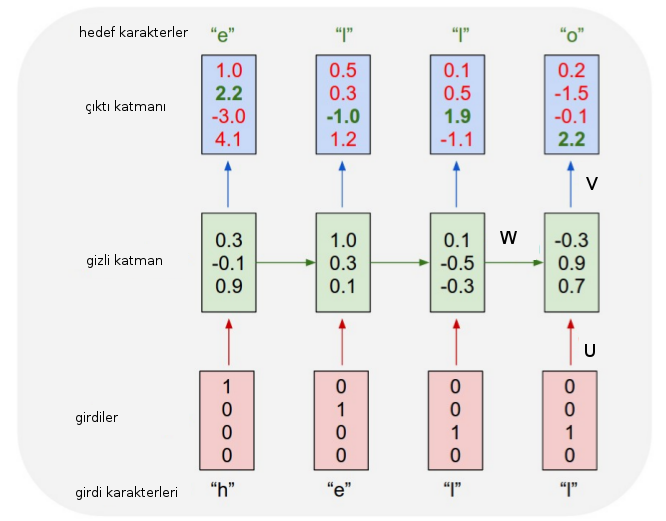
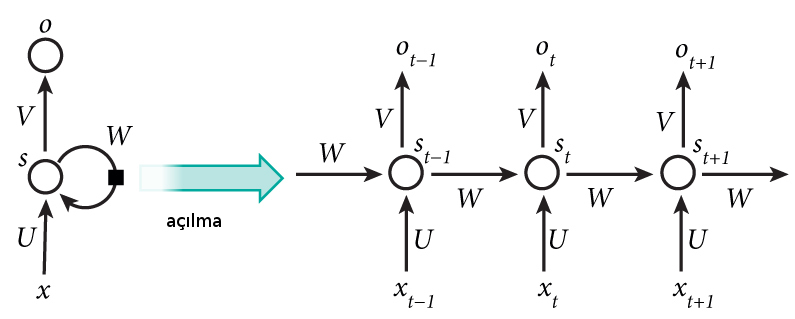
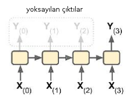
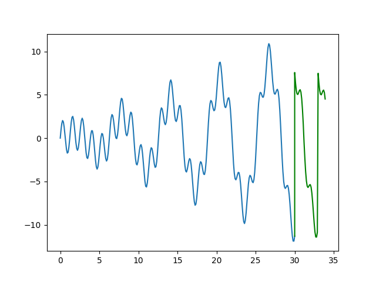

RNN’ler zaman serilerini, sıralı olan verileri modellemek için kullanılır. Mesela 2 3 1 2 3 1 2 3 1 2 3 gibi bir girdi olabilir, girdi arka arkaya gelen her 3 karakter, hedef ise 4. karakter. Bu veri üzerinde RNN eğitilebilir, ve mesela verili 2 3 1’den sonra hangi 4. sayı geldiği tahmin edilmeye uğraşılabilir. Ayrıksal olarak girdi bir harf dizisi de olabilir.

Daha önce işlediğimiz Öne Doğru Beslemeli (Feed-Forward) YSA’lar en temel, klasik yapılardır. Eğer bir \(N\) boyutlu girdi alıyorlarsa bu verinin tüm boyutlarını aynı anda işlerler. RNN için [3] yapı şöyle değişiyor (tek bir nöron için),
\(x_t\): \(t\) anındaki girdi.
\(s_t\): \(t\) anındaki gizli konum.
\[ s_t = f(U x_t + W s_{t-1})\]
\(o_t\): \(t\) anındaki çıktı, \(o_t = g(V s_t)\)
İlginç olan \(U,V,W\) ağırlık matrislerinin, parametrelerinin her zaman anı, her veri noktası için aynı olması. Yani farklı zaman dilimleri için farklı ağırlıklar atanmıyor. \(t\) anındaki gizli (hidden) konum \(s_t\), bu bir nevi “hafıza’‘. Bu fonksiyon \(x_t\) girdisinin \(W\) ile çarpılması, artı bir önceki konumun bir başka \(W\) ile çarpılması sonucundan elde ediliyor. \(W\) matrisi geçmişe ne kadar önem verileceğini tanımlıyorlar. Ardından tüm hesap bir \(\phi\) ile “eziliyor’’ yani belli aralıklara düşmesi zorlanıyor, bunun için tipik olarak sigmoid, ya da \(tanh\) kullanılır.

Bu kavramlar, konumlararası geçiş, \(t\) anındaki girdilerin ondan önceki girdileri nasıl bağlı olduğunun ağırlıklar üzerinden ayarlanması, yani filtrelenmesi, aslında Markov zincirlerine benziyor (diğer bir açıdan benzemiyor çünkü MZ matematiğinde bir zaman sadece bir öncekinden etkilenir, RNN durumunda en baştaki adım en sondakini etkileyebilir [4]). Bu hesaplar sonucu elde edilen tahmin ve hata geriye yayma (backpropagation) ile ağırlık matrislerini değiştirmek için kullanılacak.
RNN ismindeki “tekrarlanma’’ \(U,V,W\)’nin her zaman adımı için aynı olmasından geliyor. Ağ bir bakıma tek bir seviye için, bir kez tanımlanıyor, ve geriye ne kadar gidileceği üzerinden o yöne doğru kopyalanıyor, ya da”açılıyor (unfolding)’’. Bu açılma işlemini her zaman adımı için gösterebiliriz. f Zaman İçinde Geriye Doğru Yayılma (Backpropagation Through Time -BPTT-)
RNN Çesitleri, Numaraları
İlla her biriminin çıktısını kullanmak gerekmez. Her RNN biriminin \(h\) formundaki gizli katman çıktısı bir sonraki birime girdi kabul edildiği için bu çıktılar RNN’nin bütününü etkilerler, fakat etiket / düzeltme bağlamında direk kullanılmaları şart değildir. Mesela bir RNN’e bir veri dizisi verip, çıktılarının en sonuncusu hariç geri kalanlarını yok sayabiliriz, o zaman bir dizi-vektör RNN’i elde ederiz. Ya da RNN’e bir film hakkındaki tüm yorumları kelime kelime veri dizisi olarak verebiliriz, RNN’in tek çıktısı -1/+1 şeklinde beğendi / beğenmedi skoru olabilir, bu ünlü hissiyat analizi (sentiment analyis) örneğidir. Altta diyagramı görüyoruz,

Eğer zaman serisi tahmin etmek istiyorsak \(x_1,x_2,..\) serisini alıp bir kaydırarak ona karşılık olan “etiketleri’’ kendimiz yaratabiliriz. Bu durumda \(y_1,y_2,..\) serisi \(x_2,x_3,..\) serisi haline gelir.
Bir RNN’in tekrar eden kısım bir nöron yerine bir katman da olabilir, yani bu katman içinde birden fazla nöron olur, ve bu katman zamanda geriye doğru kopyalanır.
Eğer tüm çeşitleri göstermek gerekirse

Bire bir (one to one) çok basit, diğerleri bire çok (one to many), çoka bir (many to one), ve iki çeşit çoka çok (many to many). RNN yapısındaki tek sınır herhalde tekrarlanan hücrelerden daha fazla girdi hücresi olamayacak olması, fakat onun haricinde neredeyse her tür olasılık mümkün. Mesela soldan 4. örnekte üç boyutlu bir girdi sadece ilk üç tekrarlanan hücreye veriliyor, geri kalanlara bir şey verilmiyor, çıktı ise son üç hücreden alınıyor.
Şimdi TensorFlow ile en basit RNN’yi kendimiz yaratalım. Tekrar eden bir katman olacak, içinde 5 tane nöron,
import tensorflow as tf
def reset_graph(seed=42):
tf.reset_default_graph()
tf.set_random_seed(seed)
np.random.seed(seed)
reset_graph()
n_inputs = 3
n_neurons = 5
X0 = tf.placeholder(tf.float32, [None, n_inputs])
X1 = tf.placeholder(tf.float32, [None, n_inputs])
W = tf.Variable(tf.random_normal(shape=[n_inputs, n_neurons],dtype=tf.float32))
U = tf.Variable(tf.random_normal(shape=[n_neurons,n_neurons],dtype=tf.float32))
b = tf.Variable(tf.zeros([1, n_neurons], dtype=tf.float32))
Y0 = tf.tanh(tf.matmul(X0, W) + b)
Y1 = tf.tanh(tf.matmul(Y0, U) + tf.matmul(X1, W) + b)
init = tf.global_variables_initializer()Şimdi iki veri noktası verip iki veri noktası çıktısına bakalım. Bu 2-2 verisinden pek çok olacak, ki bu veriler ufak toptan setimizi (minibatch) oluşturacak. Alttaki ufak veride 4 tane o şekilde veri noktası var.
import numpy as np
# ufak toptan veri
X0_batch = np.array([[0, 1, 2], [3, 4, 5], [6, 7, 8], [9, 0, 1]]) # t = 0
X1_batch = np.array([[9, 8, 7], [0, 0, 0], [6, 5, 4], [3, 2, 1]]) # t = 1
with tf.Session() as sess:
init.run()
Y0_val, Y1_val = sess.run([Y0, Y1], feed_dict={X0: X0_batch, X1: X1_batch})
print ('t=0')
print(Y0_val)
print ('t=1')
print(Y1_val)t=0
[[-0.0664006 0.96257669 0.68105787 0.70918542 -0.89821595]
[ 0.9977755 -0.71978885 -0.99657625 0.9673925 -0.99989718]
[ 0.99999774 -0.99898815 -0.99999893 0.99677622 -0.99999988]
[ 1. -1. -1. -0.99818915 0.99950868]]
t=1
[[ 1. -1. -1. 0.40200216 -1. ]
[-0.12210433 0.62805319 0.96718419 -0.99371207 -0.25839335]
[ 0.99999827 -0.9999994 -0.9999975 -0.85943311 -0.9999879 ]
[ 0.99928284 -0.99999815 -0.99990582 0.98579615 -0.92205751]]Dikkat, eğitim yapmadık, ayrıca çıktı da üretmedik, sadece her basamak için gizli katmanı hesapladık, ve RNN’e ileri yönde hesap yaptırdık, dört kez \(x_0,x_1\) verdik o da bize dört tane \(y_0,y_1\) verdi. RNN’i eğitiyor olsaydık üretilen dört \(y_0,y_1\) için \(V\) ile çarpım, onu “gerçek’’ veriyle / etiketlerle karşılaştırmamız gerekecekti, onun üzerinden düzeltme yapacaktık, vs.
Üstteki kod kolaydı, fakat RNN iki yerine 100 zaman adımı geriye
gitsin isteseydik, bu çizit çok daha büyük olurdu. O tür kodları
kolaylaştırmak için TF’in özel çağrıları var, mesela
static_rnn bunlardan biri. Üstteki ağı bu şekilde
yaratabiliriz,
reset_graph()
X0 = tf.placeholder(tf.float32, [None, n_inputs])
X1 = tf.placeholder(tf.float32, [None, n_inputs])
basic_cell = tf.contrib.rnn.BasicRNNCell(num_units=n_neurons)
output_seqs, states = tf.contrib.rnn.static_rnn(basic_cell, [X0, X1],
dtype=tf.float32)
Y0, Y1 = output_seqs
print ('t=0')
print(Y0_val)
print ('t=1')
print(Y1_val)t=0
[[-0.0664006 0.96257669 0.68105787 0.70918542 -0.89821595]
[ 0.9977755 -0.71978885 -0.99657625 0.9673925 -0.99989718]
[ 0.99999774 -0.99898815 -0.99999893 0.99677622 -0.99999988]
[ 1. -1. -1. -0.99818915 0.99950868]]
t=1
[[ 1. -1. -1. 0.40200216 -1. ]
[-0.12210433 0.62805319 0.96718419 -0.99371207 -0.25839335]
[ 0.99999827 -0.9999994 -0.9999975 -0.85943311 -0.9999879 ]
[ 0.99928284 -0.99999815 -0.99990582 0.98579615 -0.92205751]]YSA’lar kendini tekrarlayan olsun ya da olmasın aslında \(f(g(h(x)))\) şeklinde basit içiçe fonksiyondurlar. Klasik YSA’da en sondaki hata backprop ile ağırlıklardaki değişim girdiler yönünde geriye doğru yayılır, bunu yapmak için \(-\frac{\partial E}{\partial w}\) hesaplanır, böylece tüm ağırlıklar hataya yaptıkları katkı (!) bağlamında değişikliğe uğrarlar, “düzeltilirler’’, yani düzeltme Zincir Kanunu ile dış fonksiyonlardan içe doğru aktarılmış olur.
RNN’de içiçe olma durumu zaman faktöründen kaynaklanıyor, fonksiyonlar önceki zaman dilimleri bağlamında içiçe geçmiş durumdadırlar, çünkü bir \(t\) anındaki tahmin önceki dilimlerdeki fonksiyonların sonucudur, bir geribesleme durumu vardır, her gizli konum \(h_t\) sadece bir önceki \(h_{t-1}\) değil ondan önceki tüm gizli konumlardan da etkilenir. O zaman eğitimin bunu gözönüne alması gerekir.
Dikkat: RNN’lerde içiçe geçen fonksiyonlar sebebiyle hatalar ya çok büyüyüp ya da çok küçülebiliyor, normal derin YSA’lerde de problem olabilir bu, fakat RNN’lerde bu durum daha belirgin çünkü N adım geriye gitmek demek N kadar içiçe geçen fonksiyon demek, ve sıralı veriyi tahmin için N’in büyük olması gerekebilir.
Örnek
Alttaki kodda bir metin okunarak o metindeki harf sırası tahmin
edilmeye uğraşılıyor. Metin tekrar sıfırdan üretilmeye çabalanıyor.
Otomatik türev (automatic differentiation -AD-) alma ile içiçe geçmiş
fonksiyonların zincirleme türevinin alınması sağlanıyor,
rnn_predict hesabı 40 geriye gider, AD tüm bu zinciri takip
eder.
import autograd.numpy as np
import autograd.numpy.random as npr
from autograd import grad
from autograd.scipy.misc import logsumexp
from os.path import dirname, join
from builtins import range
def sigmoid(x): return 0.5*(np.tanh(x) + 1.0)
def concat_and_multiply(weights, *args):
cat_state = np.hstack(args + (np.ones((args[0].shape[0], 1)),))
return np.dot(cat_state, weights)
def create_rnn_params(input_size, state_size, output_size,
param_scale=0.01, rs=npr.RandomState(0)):
return {'init hiddens': rs.randn(1, state_size) * param_scale,
'change': rs.randn(input_size + state_size + 1,
state_size) * param_scale,
'predict': rs.randn(state_size + 1, output_size) * param_scale}
def rnn_predict(params, inputs):
def update_rnn(input, hiddens):
return np.tanh(concat_and_multiply(params['change'], input, hiddens))
def hiddens_to_output_probs(hiddens):
output = concat_and_multiply(params['predict'], hiddens)
return output - logsumexp(output, axis=1, keepdims=True)
num_sequences = inputs.shape[1]
hiddens = np.repeat(params['init hiddens'], num_sequences, axis=0)
output = [hiddens_to_output_probs(hiddens)]
for input in inputs: # Iterate over time steps.
hiddens = update_rnn(input, hiddens)
output.append(hiddens_to_output_probs(hiddens))
return output
def string_to_one_hot(string, maxchar):
ascii = np.array([ord(c) for c in string]).T
return np.array(ascii[:,None] == np.arange(maxchar)[None, :], dtype=int)
def one_hot_to_string(one_hot_matrix):
return "".join([chr(np.argmax(c)) for c in one_hot_matrix])
def rnn_log_likelihood(params, inputs, targets):
logprobs = rnn_predict(params, inputs)
loglik = 0.0
num_time_steps, num_examples, _ = inputs.shape
for t in range(num_time_steps):
loglik += np.sum(logprobs[t] * targets[t])
return loglik / (num_time_steps * num_examples)
def training_loss(params, iter):
return -rnn.rnn_log_likelihood(params, train_inputs, train_inputs)import autograd.numpy as np
import autograd.numpy.random as npr
from autograd import grad
from autograd.optimizers import adam
import rnn
def build_dataset(filename, sequence_length, alphabet_size, max_lines=-1):
with open(filename) as f:
content = f.readlines()
content = content[:max_lines]
content = [line for line in content if len(line) > 2]
seqs = np.zeros((sequence_length, len(content), alphabet_size))
for ix, line in enumerate(content):
padded_line = (line + " " * sequence_length)[:sequence_length]
seqs[:, ix, :] = string_to_one_hot(padded_line, alphabet_size)
return seqs
num_chars = 128
text_filename = 'rnn.py'
train_inputs = build_dataset(text_filename, sequence_length=30,
alphabet_size=num_chars, max_lines=60)
init_params = rnn.create_rnn_params(input_size=128, output_size=128,
state_size=40, param_scale=0.01)
def print_training_prediction(weights):
print("Training text Predicted text")
logprobs = np.asarray(rnn_predict(weights, train_inputs))
for t in range(logprobs.shape[1]):
training_text = one_hot_to_string(train_inputs[:,t,:])
predicted_text = rnn.one_hot_to_string(logprobs[:,t,:])
print(training_text.replace('\n', ' ') + "|" +
predicted_text.replace('\n', ' '))
def callback(weights, iter, gradient):
if iter % 10 == 0:
print("Iteration", iter, "Train loss:", training_loss(weights, 0))
#print_training_prediction(weights)
# Build gradient of loss function using autograd.
training_loss_grad = grad(training_loss)
print("Training RNN...")
trained_params = adam(training_loss_grad, init_params, step_size=0.1,
num_iters=280, callback=callback)Training RNN...
('Iteration', 0, 'Train loss:', 4.854500980126768)
('Iteration', 10, 'Train loss:', 3.069896973468059)
('Iteration', 20, 'Train loss:', 2.9564946588218)
('Iteration', 30, 'Train loss:', 2.590610887049078)
('Iteration', 40, 'Train loss:', 2.3255385285729027)
('Iteration', 50, 'Train loss:', 2.1211122619024696)
('Iteration', 60, 'Train loss:', 1.9691676257416404)
('Iteration', 70, 'Train loss:', 1.8868756780002685)
('Iteration', 80, 'Train loss:', 1.7455098359656291)
('Iteration', 90, 'Train loss:', 1.7750342336507772)
('Iteration', 100, 'Train loss:', 1.6059292555729703)
('Iteration', 110, 'Train loss:', 1.5077116694554635)
('Iteration', 120, 'Train loss:', 1.437485110908115)
('Iteration', 130, 'Train loss:', 1.4504849515039933)
('Iteration', 140, 'Train loss:', 1.3480379515887519)
('Iteration', 150, 'Train loss:', 1.4083643059429929)
('Iteration', 160, 'Train loss:', 1.2655987546227996)
('Iteration', 170, 'Train loss:', 1.2051278365327054)
('Iteration', 180, 'Train loss:', 1.1561998913079512)
('Iteration', 190, 'Train loss:', 1.1814640952544757)
('Iteration', 200, 'Train loss:', 1.3673188298901471)
('Iteration', 210, 'Train loss:', 1.1591863193874781)
('Iteration', 220, 'Train loss:', 1.056688128805028)
('Iteration', 230, 'Train loss:', 1.0465201536978259)
('Iteration', 240, 'Train loss:', 1.0373081053464259)
('Iteration', 250, 'Train loss:', 1.3591698106017474)
('Iteration', 260, 'Train loss:', 1.1556108786809474)
('Iteration', 270, 'Train loss:', 1.0323757883394502)Üretmek / eğitim için rnn.py kodunun kendisi
kullanıldı.
num_letters = 30
for t in range(20):
text = ""
for i in range(num_letters):
seqs = rnn.string_to_one_hot(text, num_chars)[:, np.newaxis, :]
logprobs = rnn.rnn_predict(trained_params, seqs)[-1].ravel()
text += chr(npr.choice(len(logprobs), p=np.exp(logprobs)))
print(text) rs.lepugnunpdit - cenedili
def p.rnns, logs'ininpum, hid_
ngan rrad_ti, feturn ns.sc
def catorrtar t aut_re_strad.
hiddens_numumut in
def hiddes = rhiddensdord.rato
return ncan((ponddens_tram
ders minpperen(scnt_strt onut_
returnts, utete, jIoutdati
return oute_sthorn(pund_om
dershgline nigms, conteme_sco_
return 0.5*(natorad.mincde
contse, hiddens_mihrra opu
[cran_put inhgto_tut= retu
# Ite, wItre = retat
ashis_lik[enutnoncam(nthen
oonname, jItogput_pre_sp
cet(fiddens = lot led_ome_
def rinnam_idt(parddens_nnd(on
rs.leteqslind_tat = [hippFena değil; def ile başlanan satır ardından sonraki
satır tab ile boşluk bıraktı, bunlar kolay şeyler değil. Altta
karşılaştırma amaçlı olarak sadece frekans sayarak üretim yapan bir kod
görüyoruz. O da fena değil, bu konu hakkında daha fazla detay için
[2].
f = "../../stat/stat_naive/data/a1.txt"
print (open(f).read()[:300])A well-known scientist (some say it was Bertrand Russell) once gave a
public lecture on astronomy. He described how the earth orbits around
the sun and how the sun, in turn, orbits around the center of a vast
collection of stars called our galaxy. At the end of the lecture, a
little old lady at the import lm
lmm = lm.train_char_lm(f, order=4)
res = lm.generate_text(lmm, 4)
print (res[:400])A well-know
better? What the moon were caused by Ptolemy in more the picture only late the Greeks even had
been elongstanding that the sky what eclipses rather ridiculous, but why do we know about to someone looking the sun and the earth Star
lies one looking the North orbiting questimate thought spheres the superior smile before think we go back of the really a flat plater see then? What disk, thprint (lmm.keys()[:10])
print (lmm.get('pla'))['t w', 'Fir', 'all', 't t', 'sci', 'rom', 'ron', 'roo', 'thi', 'oss']
[('t', 0.5), ('n', 0.5)]Zaman Serisi Tahmini
Tensorflow ile zaman serisi tahmini yapalım. Eğitim verisinin formülünü bildiğimiz bir sinüs eğrisinden alacağız, sanki eğriyi bilmiyormuş gibi yapalım, bu eğriyi sadece üretilen veriye bakarak “öğreneceğiz’’. Eğrinin rasgele kısımlarından toptan veri parçaları üretmek için bir çağrı yazalım,
np.random.seed(1)
t_min, t_max = 0, 30
resolution = 0.1
def f(t):
return t * np.sin(t) / 3 + 2 * np.sin(t*5)
def next_batch(batch_size, n_steps):
t0 = np.random.rand(batch_size, 1) * (t_max - t_min - n_steps * resolution)
Ts = t0 + np.arange(0., n_steps + 1) * resolution
ys = f(Ts)
return ys[:, :-1].reshape(-1, n_steps, 1), ys[:, 1:].reshape(-1, n_steps, 1)Eğitim verisi zaman serisinin ufak bir parçası, ve hedef verisi onun bir ileri kaydırılmış hali.
Zaman serisinin rasgele şekilde nasıl örneklendiğini göstermek için üstteki çağrı içindeki örnekleme kodunun benzerini altta tekrarlayalım ve grafikleyelim. Kırmızı noktalar örneklenen veri noktaları,
batch_size = 5
n_steps = 3
t0 = np.random.rand(batch_size, 1) * (t_max - t_min - n_steps * resolution)
Ts = t0 + np.arange(0., n_steps+1) * resolution
ys = f(Ts)
print (ys)[[-2.3141651 -1.12233854 0.27200624 1.6253068 ]
[ 4.31878159 4.63599743 4.61528818 4.112844 ]
[ 0.03397153 0.99207952 1.71474727 2.02731967]
[ 2.87376693 3.00044595 2.62695206 1.77847377]
[-0.96970753 -2.03368272 -2.93926439 -3.47887785]]Grafiklersek,
t = np.linspace(t_min, t_max, int((t_max - t_min) / resolution))
y = f(t)
plt.plot(t,y)
plt.plot(Ts,ys,'r.')
plt.savefig('rnn_03.png')
Öğrenme amacıyla daha büyük adım, iç nöron sayısı tanımlayalım,
import tensorflow as tf
def reset_graph(seed=42):
tf.reset_default_graph()
tf.set_random_seed(seed)
np.random.seed(seed)
reset_graph()
n_steps = 30
n_inputs = 1
n_neurons = 200
n_outputs = 1
X = tf.placeholder(tf.float32, [None, n_steps, n_inputs])
y = tf.placeholder(tf.float32, [None, n_steps, n_outputs])
cell = tf.contrib.rnn.OutputProjectionWrapper(
tf.contrib.rnn.BasicRNNCell(num_units=n_neurons, activation=tf.nn.relu),
output_size=n_outputs)
outputs, states = tf.nn.dynamic_rnn(cell, X, dtype=tf.float32)
learning_rate = 0.01
loss = tf.reduce_mean(tf.square(outputs - y)) # MSE
optimizer = tf.train.AdamOptimizer(learning_rate=learning_rate)
training_op = optimizer.minimize(loss)
init = tf.global_variables_initializer()
n_iterations = 300
batch_size = 50
sess = tf.Session()
sess.run(tf.global_variables_initializer())
for iteration in range(n_iterations):
X_batch, y_batch = next_batch(batch_size, n_steps)
sess.run(training_op, feed_dict={X: X_batch, y: y_batch})
if iteration % 100 == 0:
mse = loss.eval(feed_dict={X: X_batch, y: y_batch}, session=sess)
print(iteration, "\tMSE:", mse)(0, '\tMSE:', 280.63486)
(100, '\tMSE:', 0.089582793)
(200, '\tMSE:', 0.044634577)Öğrenme tamamlandı ve MSE hata raporu fena değil. Şimdi bu RNN’i hiç
görmediğimiz geleceği tahmin için kullanalım, n_more adım
ilerisini tahmin edeceğiz, yanlız n_steps zaman serisi
kaydırılmış n_steps ilerisini tahmin için kullanılıyordu.
Biz tahminleri üretirken tahmin bloğunun sadece en sondaki öğesini
alacağız. Sonra bu ögeyi kaynak veriye dahil edip bir gelecek bloğu daha
üreteceğiz (onun da son öğesini alacağız, vs), ve böyle gide gide
n_more kadar geleceği bitiştirmiş olacağız.
n_more = 40
t = np.linspace(t_min, t_max, int((t_max - t_min) / resolution))
y = f(t)
newx = list(t[-n_steps:])
newy = list(y[-n_steps:])
for i in range(n_more): # bu kadar daha uret
tst_input = np.array(newy[-n_steps:]).reshape(1,n_steps,1)
res = sess.run(outputs, feed_dict={X: tst_input})
newy.append(res[0][0][0])
newx.append(t_max + (i*resolution))
plt.plot(t,y)
plt.plot(newx[n_steps-1:],newy[n_steps-1:],'g')
plt.savefig('rnn_04.png')
Yeşil renkli tahmin bölümü.
Problemler
RNN problemlerinden biri şerisel olarak modellenen verinin ağ yapısında geriye doğru giderken eğitim sırasında yokolan gradyan (vanishing gradient) problemine sebep olabilmesi. Çünkü YSA yatay olarak derin, ve gradyan geriye doğru yayılma yaparken sayısal olarak problemlere yol açabiliyor. Çözümler adım sayısını azaltmak olabilir, ya da bu problemlerin bazılarını düzelten LSTM kullanmak olabilir.
Kaynaklar
[1] A Beginner’s Guide to Recurrent Networks and LSTMs, https://deeplearning4j.org/lstm#a-beginners-guide-to-recurrent-networks-and-lstms
[2] Bayramlı, Derin Öğrenim ile Text Üretmek, RNN, LSTM, https://burakbayramli.github.io/dersblog/sk/2017/01/derin-ogrenim-ile-text-uretmek-rnn-lstm.html
[3] Britz, Recurrent Neural Networks Tutorial, Part 1, http://www.wildml.com/2015/09/recurrent-neural-networks-tutorial-part-1-introduction-to-rnns/
[4] Lipton, A Critical Review of Recurrent Neural Networks for Sequence Learning,https://arxiv.org/abs/1506.00019